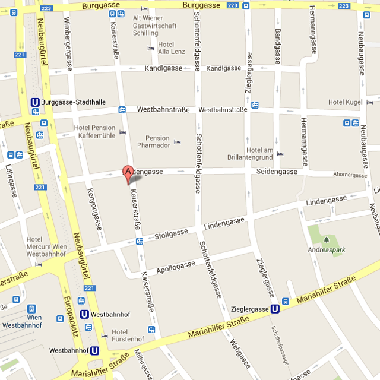

	<script>
		$(document).ready(function(){
			$('a.gallery').colorbox( { rel: 'group1', slideshow: true, slideshowSpeed: 4000, slideshowAuto: true } );	
		});
	</script>

	<article id="anfahrt">

		<section id="allgemeine_leistungen" class="aktiv">
			<div class="div-table">

				<div class="div-row">
					<div class="div-cell content1">
						<figure>
							
						</figure>
					</div>

					<div class="div-cell content2">
						<h2>Anfahrt</h2>

						<div class="small-gap"></div>

						<p>Sie erreichen unsere Ordination öffentlich</p>
						<ul>
							<li>
								mit der Straßenbahn Linie 5 - Haltestelle Stollgasse oder Westbahnstraße
							</li>
							<li>
								mit den Straßnbahnen Linie 6, 9, 18, 52 und 58 - Haltestelle Westbahnhof
							</li>
							<li>
								mit den U-Bahnen Linie U3 und U6 - Haltestelle Westbahnhof
							</li>
						</ul>

						<div class="small-gap"></div>

						<p>	
							Wenn Sie mit dem Auto kommen, beachten Sie die Kurzparkregelung füen 7. Bezirk (Parkpickerl).
							Parkgaragen:
						</p>
						<ul class="parkgaragen">
							<li>Lugner-Garagen Kaiserstr. 45</li>
							<li>Apollo-Garage Apollog. 11-13</li>
							<li>Parkplatz 'la stafa' Kaiserstr. 7</li>
						</ul>
					</div>

				</div>
			</div>
		</section>

